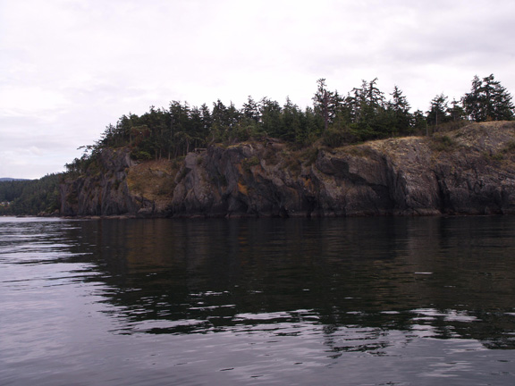
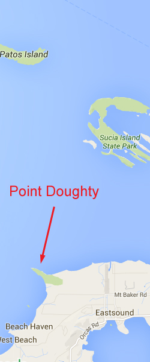

<!doctype html>
<html>
<head>
<meta charset="utf-8">
<title>Point Doughty</title>
<meta name="generator" content="WYSIWYG Web Builder - http://www.wysiwygwebbuilder.com">
<link href="Emerald_Diving.css" rel="stylesheet">
<link href="point_doughty.css" rel="stylesheet">
<script>
function onChangeGoMenu1(){var a=document.getElementById('GoMenu1-select'),b=a.options[a.selectedIndex].value,c=a.options[a.selectedIndex].className;a.selectedIndex=0;a.blur();b&&(NewWin=window.open(b,c),window.NewWin.focus())};
</script>
</head>
<body>
<script>
var gaJsHost = (("https:" == document.location.protocol) ? "https://ssl." : "http://www.");
document.write(unescape("%3Cscript src='" + gaJsHost + "google-analytics.com/ga.js' type='text/javascript'%3E%3C/script%3E"));
</script>
<script>
try {
var pageTracker = _gat._getTracker("UA-15987748-1");
pageTracker._trackPageview();
} catch(err) {}</script>

<div id="container">
<div id="wb_MasterPage1" style="position:absolute;left:0px;top:2px;width:1048px;height:57px;z-index:3;">
<div id="wb_Shape1" style="position:absolute;left:0px;top:0px;width:1048px;height:57px;z-index:0;">
</div>
<div id="wb_Text1" style="position:absolute;left:20px;top:5px;width:169px;height:16px;z-index:1;">
<span style="color:#00FF00;font-family:Arial;font-size:13px;"><em><a href="./local_sites_sj.html" class="Green">Return to San Juan Map</a></em></span></div>
<div id="wb_GoMenu1" style="position:absolute;left:800px;top:5px;width:225px;height:25px;z-index:2;">
<form id="GoMenu1" role="menu">
<select id="GoMenu1-select" name="GoMenu1" onchange="onChangeGoMenu1()">
<option class="_self" value="#" selected>Select a Dive Site</option>
<option class="_self" value="./davidson.html" role="menuitem">Davidson Rocks</option>
<option class="_self" value="./deadman_wall.html" role="menuitem">Deadman Island Wall</option>
<option class="_self" value="./kellett_wall.html" role="menuitem">Kellett Wall</option>
<option class="_self" value="./lawrence_point.html" role="menuitem">Lawrence Point</option>
<option class="_self" value="./lawson_bluff.html" role="menuitem">Lawson Bluff</option>
<option class="_self" value="./long_island.html" role="menuitem">Long Island West Wall</option>
<option class="_self" value="./peavine_pass.html" role="menuitem">Peavine Pass</option>
<option class="_self" value="./pile_point.html" role="menuitem">Pile Point</option>
<option class="_self" value="./point_doughty.html" role="menuitem">Point Doughty</option>
<option class="_self" value="./sares_head.html" role="menuitem">Sares head</option>
<option class="_self" value="./strawberry_island.html" role="menuitem">Strawberry Island</option>
<option class="_self" value="./turn_point.html" role="menuitem">Turn Point</option>
<option class="_self" value="./whale_rocks.html" role="menuitem">Whale Rocks</option>
</select>
</form>
</div>
</div>
<div id="wb_Text2" style="position:absolute;left:160px;top:568px;width:324px;height:12px;z-index:4;">
<span style="color:#000000;font-family:Arial;font-size:11px;">Double click to edit</span></div>
<div id="wb_Text1654" style="position:absolute;left:7px;top:1227px;width:477px;height:1px;z-index:5;">
&nbsp;</div>
<div id="wb_Image2" style="position:absolute;left:0px;top:58px;width:794px;height:594px;z-index:6;">
</div>
<div id="wb_Text3" style="position:absolute;left:22px;top:66px;width:527px;height:54px;z-index:7;">
<span style="color:#009300;font-family:Arial;font-size:48px;">Point Doughty</span></div>
<div id="wb_Text4" style="position:absolute;left:0px;top:671px;width:555px;height:1px;z-index:8;">
&nbsp;</div>
<div id="wb_Text5" style="position:absolute;left:2px;top:658px;width:1030px;height:1132px;z-index:9;">
<span style="color:#FFFFFF;font-family:Arial;font-size:15px;"><strong>Topography: </strong>Cascading rock formations, small walls, and boulders on a steep incline.<br><strong><br>San Juan Islands marine life rating: </strong>3<strong><br></strong><br><strong>San Juan Islands structure rating: </strong>3<br><br><strong>Diving depth: </strong>60-80 feet.<br><br><strong>Highlight: </strong>Off-slack dive. Fun structure to poke around and look for interesting macro life.<br><br><strong>Skill level: </strong>Intermediate<br><br><strong>GPS coordinates: </strong>N48° 42.740&nbsp; W122° 57.007<br><br><strong>Access by boat: </strong>Point Doughty is a long and prominent spur extending from the northwest side of Orcas Islands. I dive on the north side of the point.<br><br><strong>Shore access: </strong>None<br><br><strong>Dive profile: </strong>Although the south side of Point Doughty is relatively shallow, the north side offers interesting and steep structure for divers to explore. Anchoring and running an unattended boat is possible at this site, but I like to run a live boat. Not only does a live boat help mitigate risk associated with current, but it allows freedom during the dive to explore at will and not worry about getting back to the entry point. The shoreline along this site is not conducive to a stranded diver as most of the area is surrounded by vertical bluffs.<br><br>I start my dive on the north side of the point where the substrate breaks away at a steep pace. Although thick bull kelp thrives just off the point, the shallows along the northeast side of the point are dominated with broadleaf kelp and pose little snagging hazard. I start my dive by heading northeast past the point until the current begins to intensify, then reverse course back towards the point and along the bluff.<br><br>The seascape consists of rock faces, massive lone boulders, boulder fields, and small walls interspersed with areas of white broken shell substrate. Some of the lone boulders are more than 15 feet high and 20 feet across. Although the shallows are covered with rocky structure, the structure at deeper depths tends to come and go. Prominent rocky features are often separated by expanses of broken shell substrate. Rocky structure continues to at least 80 feet deep along this extensive dive site.<br><br><strong>My preferred gas mix: </strong>EAN 36<br><strong><br>Current observations: </strong><br><br><em>Current Station: </em>Parker Reef, 1.0 mile N<br><em>Noted Slack Corrections</em>: None <br><br>I only dive this site on a flooding current during minor exchanges. During these times, the current gently pushes towards the point. Signs of strong current are often visible on the surface beyond the point, but the waters on the north side of the point are relatively protected.&nbsp; Venturing too far beyond the point during a dive could potentially result in being swept away by the current.<br>&nbsp; <br><strong>Boat launch: <br></strong><br>Washington Park (Anacortes). Approximately 22 miles from the dive site. This park offers a good boat launch with docks, restroom facilities, and camping. Parking with a trailer during summer months can be very tight, although some parking is reserved for day use. <br><br><strong>Facilities: </strong>None<br><br><strong>Hazards: <br><br></strong>Current: Potential for heavy current, especially beyond the end of the point, during an ebbing tide, or on major exchanges. <br><br>Exposure: This site is exposed to wind and weather to the north and east. Any sudden foul weather may result in rapidly deteriorating conditions. <br><br><strong>Marine life: </strong>The diversity, color, and number of marine species at this site are not near as robust as most other San Juan Island dive sites listed in this guide. Regardless, I enjoy exploring the countless crags and cracks this site offers for interesting small creatures. Expect to find some decent invertebrate populations. Healthy stocks of giant purple and red sea urchins grace this reef, as do magnificent cushion stars, hairy sea squirts, decorator crabs, and fringed tube worms. I have found scaled crabs on occasion.<br><br>Fish stocks are a bit depleted. Small copper rockfish, Puget Sound rockfish, and colorful longfin sculpins are some of the more common residents. Northern ronquils and blackeye gobys are everywhere. Highlighting one dive was a very large dogfish (over 4) that buzzed my buddy and me three times.<br><br><br><br><br></span></div>
<div id="wb_Image1" style="position:absolute;left:796px;top:58px;width:244px;height:594px;z-index:10;">
</div>
</div>
</body>
</html>